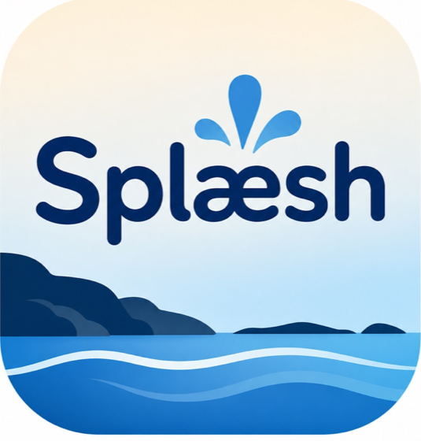
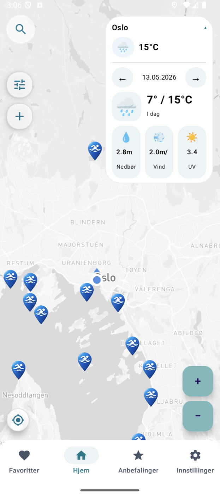
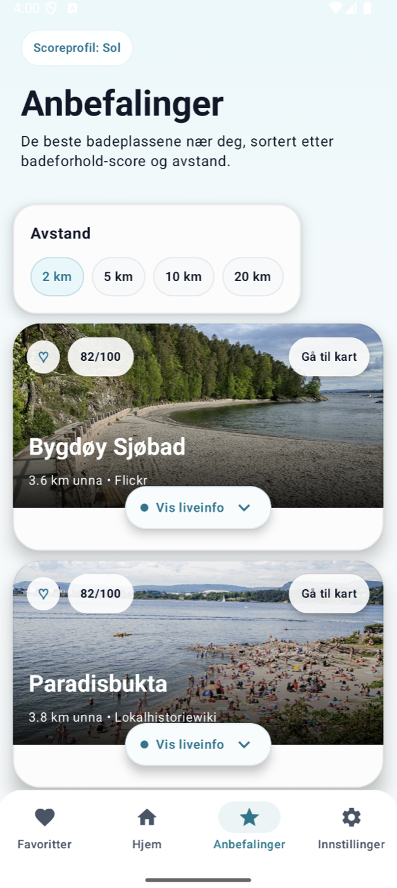
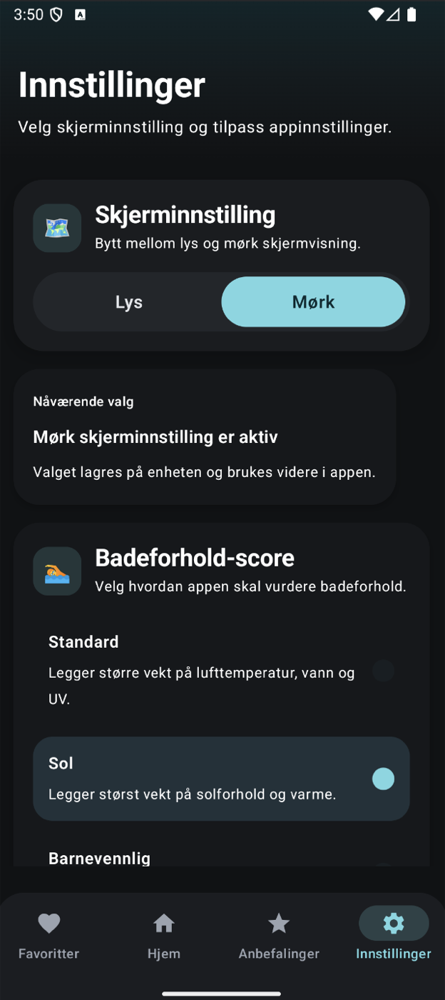
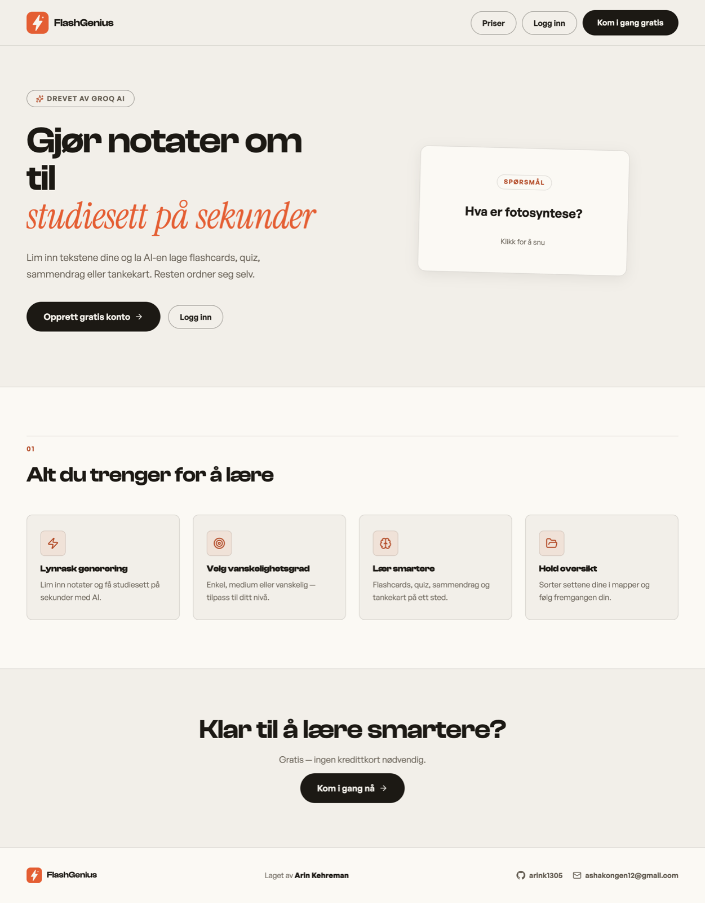
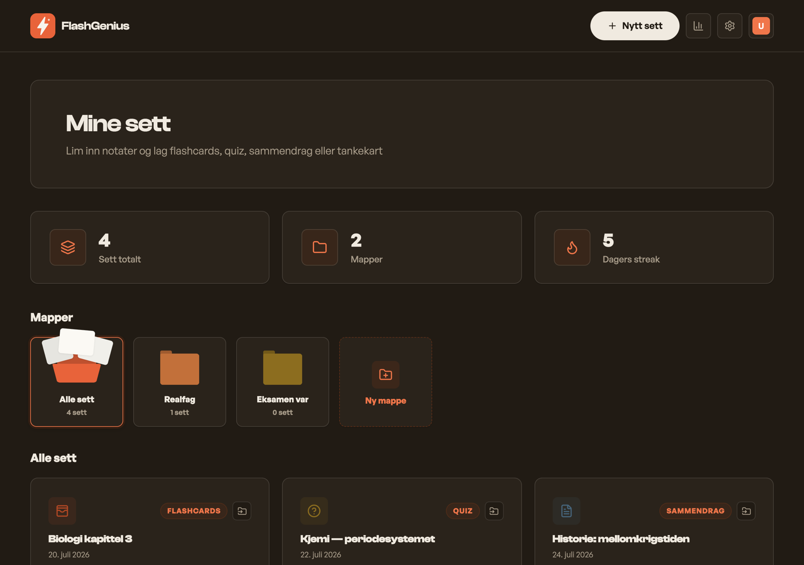
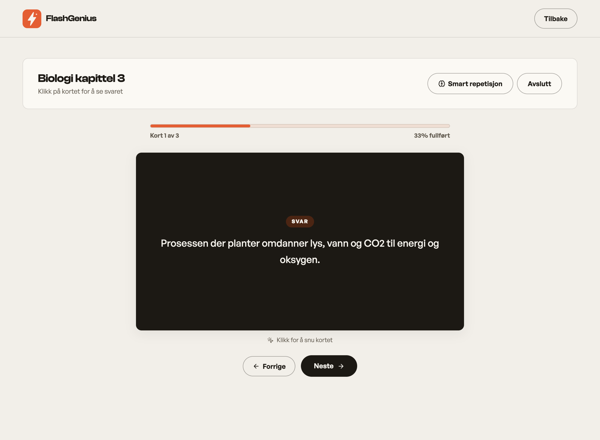

Computer Science Student — Oslo, Norway
Arin Kehreman.
I am Arin Kehreman, a University of Oslo computer science student who enjoys programming, building practical software, and developing a broad technical foundation across different languages and tools.
What I focus on
I enjoy building products that combine strong functionality with a clean and understandable interface.
I care about details, usability, and making technical features feel approachable for real users.
I study Informatics at the University of Oslo and have completed two years focused on programming, system-oriented thinking, and building practical software projects.
- University of Oslo Informatics student
- 2 years completed Programming and systems
Languages, tools & strengths
- 01Java
- 02Kotlin
- 03Python
- 04C
- 05JavaScript
- 06SQL
- 07HTML & CSS
Tools
- Android Studio
- VS Code
- GitHub
- Gradle
- Figma
Strengths
- Clean UI
- Structured Code
- Problem Solving
- User Focus
- Teamwork
- Fast Learner
Splæsh

Splæsh is an Android app for discovering bathing places in Norway, with weather information, warnings, sea data, and a recommendation flow built into one map-based experience.
In this project I worked on design polish, warnings and UV integration, parts of the weather map work, and the UX around bathing score and recommendations.
- 01Kotlin
- 02Jetpack Compose
- 03Mapbox
- 04Retrofit
- 05MVVM
- 06Coroutines



FlashGenius
FlashGenius is a full-stack web app that turns your notes into AI-generated study material — flashcards, quizzes, summaries, and mind maps — studied through clean, interactive interfaces.
I built FlashGenius end to end: the React frontend, the FastAPI backend, a Stripe-powered freemium model, and a spaced-repetition engine that schedules each card right before you forget it.
- 01React
- 02FastAPI
- 03PostgreSQL
- 04Stripe
- 05Groq / gpt-oss
- 06Vercel



University of Oslo
Informatics: Programming and System Architecture
Completed 2 years of study
My studies have given me experience with programming, system-oriented thinking, and software architecture, while my portfolio work has helped me turn that knowledge into practical products.